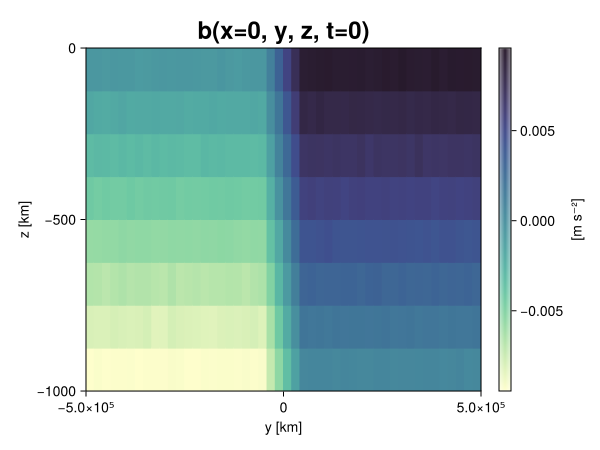
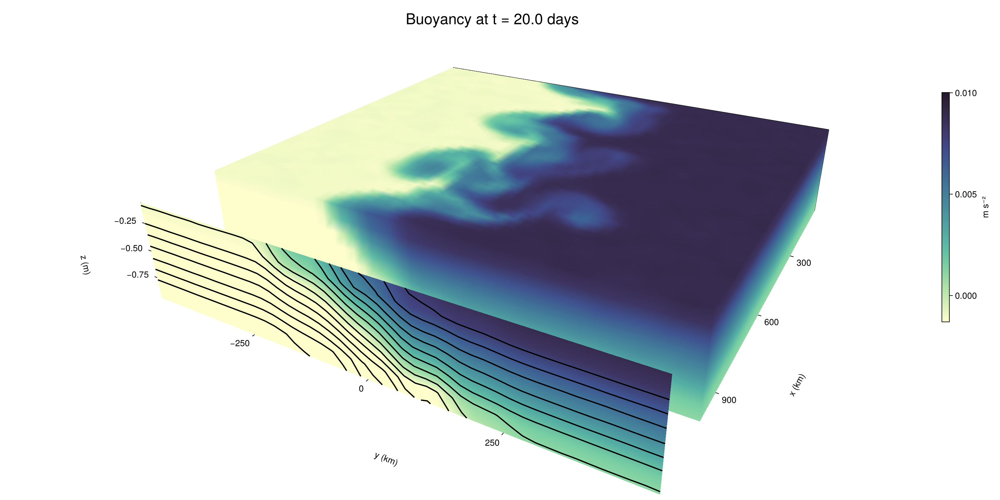

Baroclinic adjustment
In this example, we simulate the evolution and equilibration of a baroclinically unstable front.
Install dependencies
First let's make sure we have all required packages installed.
using Pkg
pkg"add Oceananigans, CairoMakie"using Oceananigans
using Oceananigans.UnitsGrid
We use a three-dimensional channel that is periodic in the x direction:
Lx = 1000kilometers # east-west extent [m]
Ly = 1000kilometers # north-south extent [m]
Lz = 1kilometers # depth [m]
grid = RectilinearGrid(size = (48, 48, 8),
x = (0, Lx),
y = (-Ly/2, Ly/2),
z = (-Lz, 0),
topology = (Periodic, Bounded, Bounded))48×48×8 RectilinearGrid{Float64, Periodic, Bounded, Bounded} on CPU with 3×3×3 halo
├── Periodic x ∈ [0.0, 1.0e6) regularly spaced with Δx=20833.3
├── Bounded y ∈ [-500000.0, 500000.0] regularly spaced with Δy=20833.3
└── Bounded z ∈ [-1000.0, 0.0] regularly spaced with Δz=125.0Model
We built a HydrostaticFreeSurfaceModel with an ImplicitFreeSurface solver. Regarding Coriolis, we use a beta-plane centered at 45° South.
model = HydrostaticFreeSurfaceModel(; grid,
coriolis = BetaPlane(latitude = -45),
buoyancy = BuoyancyTracer(),
tracers = :b,
momentum_advection = WENO(),
tracer_advection = WENO())HydrostaticFreeSurfaceModel{CPU, RectilinearGrid}(time = 0 seconds, iteration = 0)
├── grid: 48×48×8 RectilinearGrid{Float64, Periodic, Bounded, Bounded} on CPU with 3×3×3 halo
├── timestepper: QuasiAdamsBashforth2TimeStepper
├── tracers: b
├── closure: Nothing
├── buoyancy: BuoyancyTracer with ĝ = NegativeZDirection()
├── free surface: ImplicitFreeSurface with gravitational acceleration 9.80665 m s⁻²
│ └── solver: FFTImplicitFreeSurfaceSolver
├── advection scheme:
│ ├── momentum: WENO reconstruction order 5
│ └── b: WENO reconstruction order 5
└── coriolis: BetaPlane{Float64}We start our simulation from rest with a baroclinically unstable buoyancy distribution. We use ramp(y, Δy), defined below, to specify a front with width Δy and horizontal buoyancy gradient M². We impose the front on top of a vertical buoyancy gradient N² and a bit of noise.
"""
ramp(y, Δy)
Linear ramp from 0 to 1 between -Δy/2 and +Δy/2.
For example:
```
y < -Δy/2 => ramp = 0
-Δy/2 < y < -Δy/2 => ramp = y / Δy
y > Δy/2 => ramp = 1
```
"""
ramp(y, Δy) = min(max(0, y/Δy + 1/2), 1)
N² = 1e-5 # [s⁻²] buoyancy frequency / stratification
M² = 1e-7 # [s⁻²] horizontal buoyancy gradient
Δy = 100kilometers # width of the region of the front
Δb = Δy * M² # buoyancy jump associated with the front
ϵb = 1e-2 * Δb # noise amplitude
bᵢ(x, y, z) = N² * z + Δb * ramp(y, Δy) + ϵb * randn()
set!(model, b=bᵢ)Let's visualize the initial buoyancy distribution.
using CairoMakie
# Build coordinates with units of kilometers
x, y, z = 1e-3 .* nodes(grid, (Center(), Center(), Center()))
b = model.tracers.b
fig, ax, hm = heatmap(view(b, 1, :, :),
colormap = :deep,
axis = (xlabel = "y [km]",
ylabel = "z [km]",
title = "b(x=0, y, z, t=0)",
titlesize = 24))
Colorbar(fig[1, 2], hm, label = "[m s⁻²]")
fig
Simulation
Now let's build a Simulation.
simulation = Simulation(model, Δt=20minutes, stop_time=20days)Simulation of HydrostaticFreeSurfaceModel{CPU, RectilinearGrid}(time = 0 seconds, iteration = 0)
├── Next time step: 20 minutes
├── Elapsed wall time: 0 seconds
├── Wall time per iteration: NaN days
├── Stop time: 20 days
├── Stop iteration : Inf
├── Wall time limit: Inf
├── Callbacks: OrderedDict with 4 entries:
│ ├── stop_time_exceeded => Callback of stop_time_exceeded on IterationInterval(1)
│ ├── stop_iteration_exceeded => Callback of stop_iteration_exceeded on IterationInterval(1)
│ ├── wall_time_limit_exceeded => Callback of wall_time_limit_exceeded on IterationInterval(1)
│ └── nan_checker => Callback of NaNChecker for u on IterationInterval(100)
├── Output writers: OrderedDict with no entries
└── Diagnostics: OrderedDict with no entriesWe add a TimeStepWizard callback to adapt the simulation's time-step,
conjure_time_step_wizard!(simulation, IterationInterval(20), cfl=0.2, max_Δt=20minutes)Also, we add a callback to print a message about how the simulation is going,
using Printf
wall_clock = Ref(time_ns())
function print_progress(sim)
u, v, w = model.velocities
progress = 100 * (time(sim) / sim.stop_time)
elapsed = (time_ns() - wall_clock[]) / 1e9
@printf("[%05.2f%%] i: %d, t: %s, wall time: %s, max(u): (%6.3e, %6.3e, %6.3e) m/s, next Δt: %s\n",
progress, iteration(sim), prettytime(sim), prettytime(elapsed),
maximum(abs, u), maximum(abs, v), maximum(abs, w), prettytime(sim.Δt))
wall_clock[] = time_ns()
return nothing
end
add_callback!(simulation, print_progress, IterationInterval(100))Diagnostics/Output
Here, we save the buoyancy, $b$, at the edges of our domain as well as the zonal ($x$) average of buoyancy.
u, v, w = model.velocities
ζ = ∂x(v) - ∂y(u)
B = Average(b, dims=1)
U = Average(u, dims=1)
V = Average(v, dims=1)
filename = "baroclinic_adjustment"
save_fields_interval = 0.5day
slicers = (east = (grid.Nx, :, :),
north = (:, grid.Ny, :),
bottom = (:, :, 1),
top = (:, :, grid.Nz))
for side in keys(slicers)
indices = slicers[side]
simulation.output_writers[side] = JLD2OutputWriter(model, (; b, ζ);
filename = filename * "_$(side)_slice",
schedule = TimeInterval(save_fields_interval),
overwrite_existing = true,
indices)
end
simulation.output_writers[:zonal] = JLD2OutputWriter(model, (; b=B, u=U, v=V);
filename = filename * "_zonal_average",
schedule = TimeInterval(save_fields_interval),
overwrite_existing = true)JLD2OutputWriter scheduled on TimeInterval(12 hours):
├── filepath: baroclinic_adjustment_zonal_average.jld2
├── 3 outputs: (b, u, v)
├── array type: Array{Float64}
├── including: [:grid, :coriolis, :buoyancy, :closure]
├── file_splitting: NoFileSplitting
└── file size: 31.6 KiBNow we're ready to run.
@info "Running the simulation..."
run!(simulation)
@info "Simulation completed in " * prettytime(simulation.run_wall_time)[ Info: Running the simulation...
[ Info: Initializing simulation...
[00.00%] i: 0, t: 0 seconds, wall time: 34.415 seconds, max(u): (0.000e+00, 0.000e+00, 0.000e+00) m/s, next Δt: 20 minutes
[ Info: ... simulation initialization complete (33.852 seconds)
[ Info: Executing initial time step...
[ Info: ... initial time step complete (21.745 seconds).
[06.94%] i: 100, t: 1.389 days, wall time: 44.883 seconds, max(u): (1.255e-01, 1.162e-01, 1.558e-03) m/s, next Δt: 20 minutes
[13.89%] i: 200, t: 2.778 days, wall time: 1.218 seconds, max(u): (2.186e-01, 1.683e-01, 1.656e-03) m/s, next Δt: 20 minutes
[20.83%] i: 300, t: 4.167 days, wall time: 1.147 seconds, max(u): (2.884e-01, 2.216e-01, 1.645e-03) m/s, next Δt: 20 minutes
[27.78%] i: 400, t: 5.556 days, wall time: 1.075 seconds, max(u): (3.934e-01, 2.975e-01, 1.734e-03) m/s, next Δt: 20 minutes
[34.72%] i: 500, t: 6.944 days, wall time: 1.155 seconds, max(u): (4.773e-01, 3.907e-01, 1.952e-03) m/s, next Δt: 20 minutes
[41.67%] i: 600, t: 8.333 days, wall time: 1.175 seconds, max(u): (5.827e-01, 5.380e-01, 2.085e-03) m/s, next Δt: 20 minutes
[48.61%] i: 700, t: 9.722 days, wall time: 1.134 seconds, max(u): (7.347e-01, 8.756e-01, 3.015e-03) m/s, next Δt: 20 minutes
[55.56%] i: 800, t: 11.111 days, wall time: 1.129 seconds, max(u): (9.756e-01, 1.159e+00, 3.960e-03) m/s, next Δt: 20 minutes
[62.50%] i: 900, t: 12.500 days, wall time: 1.015 seconds, max(u): (1.347e+00, 1.120e+00, 4.657e-03) m/s, next Δt: 20 minutes
[69.44%] i: 1000, t: 13.889 days, wall time: 1.101 seconds, max(u): (1.536e+00, 1.168e+00, 5.832e-03) m/s, next Δt: 20 minutes
[76.39%] i: 1100, t: 15.278 days, wall time: 1.124 seconds, max(u): (1.408e+00, 1.185e+00, 3.433e-03) m/s, next Δt: 20 minutes
[83.33%] i: 1200, t: 16.667 days, wall time: 1.160 seconds, max(u): (1.270e+00, 1.142e+00, 3.615e-03) m/s, next Δt: 20 minutes
[90.28%] i: 1300, t: 18.056 days, wall time: 1.321 seconds, max(u): (1.381e+00, 1.104e+00, 4.861e-03) m/s, next Δt: 20 minutes
[97.22%] i: 1400, t: 19.444 days, wall time: 1.114 seconds, max(u): (1.444e+00, 1.235e+00, 3.869e-03) m/s, next Δt: 20 minutes
[ Info: Simulation is stopping after running for 1.266 minutes.
[ Info: Simulation time 20 days equals or exceeds stop time 20 days.
[ Info: Simulation completed in 1.267 minutes
Visualization
All that's left is to make a pretty movie. Actually, we make two visualizations here. First, we illustrate how to make a 3D visualization with Makie's Axis3 and Makie.surface. Then we make a movie in 2D. We use CairoMakie in this example, but note that using GLMakie is more convenient on a system with OpenGL, as figures will be displayed on the screen.
using CairoMakieThree-dimensional visualization
We load the saved buoyancy output on the top, north, and east surface as FieldTimeSerieses.
filename = "baroclinic_adjustment"
sides = keys(slicers)
slice_filenames = NamedTuple(side => filename * "_$(side)_slice.jld2" for side in sides)
b_timeserieses = (east = FieldTimeSeries(slice_filenames.east, "b"),
north = FieldTimeSeries(slice_filenames.north, "b"),
top = FieldTimeSeries(slice_filenames.top, "b"))
B_timeseries = FieldTimeSeries(filename * "_zonal_average.jld2", "b")
times = B_timeseries.times
grid = B_timeseries.grid48×48×8 RectilinearGrid{Float64, Periodic, Bounded, Bounded} on CPU with 3×3×3 halo
├── Periodic x ∈ [0.0, 1.0e6) regularly spaced with Δx=20833.3
├── Bounded y ∈ [-500000.0, 500000.0] regularly spaced with Δy=20833.3
└── Bounded z ∈ [-1000.0, 0.0] regularly spaced with Δz=125.0We build the coordinates. We rescale horizontal coordinates to kilometers.
xb, yb, zb = nodes(b_timeserieses.east)
xb = xb ./ 1e3 # convert m -> km
yb = yb ./ 1e3 # convert m -> km
Nx, Ny, Nz = size(grid)
x_xz = repeat(x, 1, Nz)
y_xz_north = y[end] * ones(Nx, Nz)
z_xz = repeat(reshape(z, 1, Nz), Nx, 1)
x_yz_east = x[end] * ones(Ny, Nz)
y_yz = repeat(y, 1, Nz)
z_yz = repeat(reshape(z, 1, Nz), grid.Ny, 1)
x_xy = x
y_xy = y
z_xy_top = z[end] * ones(grid.Nx, grid.Ny)Then we create a 3D axis. We use zonal_slice_displacement to control where the plot of the instantaneous zonal average flow is located.
fig = Figure(size = (1600, 800))
zonal_slice_displacement = 1.2
ax = Axis3(fig[2, 1],
aspect=(1, 1, 1/5),
xlabel = "x (km)",
ylabel = "y (km)",
zlabel = "z (m)",
xlabeloffset = 100,
ylabeloffset = 100,
zlabeloffset = 100,
limits = ((x[1], zonal_slice_displacement * x[end]), (y[1], y[end]), (z[1], z[end])),
elevation = 0.45,
azimuth = 6.8,
xspinesvisible = false,
zgridvisible = false,
protrusions = 40,
perspectiveness = 0.7)Axis3()We use data from the final savepoint for the 3D plot. Note that this plot can easily be animated by using Makie's Observable. To dive into Observables, check out Makie.jl's Documentation.
n = length(times)41Now let's make a 3D plot of the buoyancy and in front of it we'll use the zonally-averaged output to plot the instantaneous zonal-average of the buoyancy.
b_slices = (east = interior(b_timeserieses.east[n], 1, :, :),
north = interior(b_timeserieses.north[n], :, 1, :),
top = interior(b_timeserieses.top[n], :, :, 1))
# Zonally-averaged buoyancy
B = interior(B_timeseries[n], 1, :, :)
clims = 1.1 .* extrema(b_timeserieses.top[n][:])
kwargs = (colorrange=clims, colormap=:deep, shading=NoShading)
surface!(ax, x_yz_east, y_yz, z_yz; color = b_slices.east, kwargs...)
surface!(ax, x_xz, y_xz_north, z_xz; color = b_slices.north, kwargs...)
surface!(ax, x_xy, y_xy, z_xy_top; color = b_slices.top, kwargs...)
sf = surface!(ax, zonal_slice_displacement .* x_yz_east, y_yz, z_yz; color = B, kwargs...)
contour!(ax, y, z, B; transformation = (:yz, zonal_slice_displacement * x[end]),
levels = 15, linewidth = 2, color = :black)
Colorbar(fig[2, 2], sf, label = "m s⁻²", height = Relative(0.4), tellheight=false)
title = "Buoyancy at t = " * string(round(times[n] / day, digits=1)) * " days"
fig[1, 1:2] = Label(fig, title; fontsize = 24, tellwidth = false, padding = (0, 0, -120, 0))
rowgap!(fig.layout, 1, Relative(-0.2))
colgap!(fig.layout, 1, Relative(-0.1))
save("baroclinic_adjustment_3d.png", fig)
Two-dimensional movie
We make a 2D movie that shows buoyancy $b$ and vertical vorticity $ζ$ at the surface, as well as the zonally-averaged zonal and meridional velocities $U$ and $V$ in the $(y, z)$ plane. First we load the FieldTimeSeries and extract the additional coordinates we'll need for plotting
ζ_timeseries = FieldTimeSeries(slice_filenames.top, "ζ")
U_timeseries = FieldTimeSeries(filename * "_zonal_average.jld2", "u")
B_timeseries = FieldTimeSeries(filename * "_zonal_average.jld2", "b")
V_timeseries = FieldTimeSeries(filename * "_zonal_average.jld2", "v")
xζ, yζ, zζ = nodes(ζ_timeseries)
yv = ynodes(V_timeseries)
xζ = xζ ./ 1e3 # convert m -> km
yζ = yζ ./ 1e3 # convert m -> km
yv = yv ./ 1e3 # convert m -> km49-element Vector{Float64}:
-500.0
-479.1666666666667
-458.3333333333333
-437.5
-416.6666666666667
-395.8333333333333
-375.0
-354.1666666666667
-333.3333333333333
-312.5
-291.6666666666667
-270.8333333333333
-250.0
-229.16666666666666
-208.33333333333334
-187.5
-166.66666666666666
-145.83333333333334
-125.0
-104.16666666666667
-83.33333333333333
-62.5
-41.666666666666664
-20.833333333333332
0.0
20.833333333333332
41.666666666666664
62.5
83.33333333333333
104.16666666666667
125.0
145.83333333333334
166.66666666666666
187.5
208.33333333333334
229.16666666666666
250.0
270.8333333333333
291.6666666666667
312.5
333.3333333333333
354.1666666666667
375.0
395.8333333333333
416.6666666666667
437.5
458.3333333333333
479.1666666666667
500.0Next, we set up a plot with 4 panels. The top panels are large and square, while the bottom panels get a reduced aspect ratio through rowsize!.
set_theme!(Theme(fontsize=24))
fig = Figure(size=(1800, 1000))
axb = Axis(fig[1, 2], xlabel="x (km)", ylabel="y (km)", aspect=1)
axζ = Axis(fig[1, 3], xlabel="x (km)", ylabel="y (km)", aspect=1, yaxisposition=:right)
axu = Axis(fig[2, 2], xlabel="y (km)", ylabel="z (m)")
axv = Axis(fig[2, 3], xlabel="y (km)", ylabel="z (m)", yaxisposition=:right)
rowsize!(fig.layout, 2, Relative(0.3))To prepare a plot for animation, we index the timeseries with an Observable,
n = Observable(1)
b_top = @lift interior(b_timeserieses.top[$n], :, :, 1)
ζ_top = @lift interior(ζ_timeseries[$n], :, :, 1)
U = @lift interior(U_timeseries[$n], 1, :, :)
V = @lift interior(V_timeseries[$n], 1, :, :)
B = @lift interior(B_timeseries[$n], 1, :, :)Observable([-0.009372180188135187 -0.008139221032000559 -0.006873846775603561 -0.005615978105493011 -0.004370195364180893 -0.0031439359618187315 -0.001882186563930354 -0.0006063991652414522; -0.00937433599383137 -0.008124956913228683 -0.006877791796217608 -0.00561999244577925 -0.004377887983984981 -0.003127099508862273 -0.0018797707977013106 -0.0006225103585805337; -0.009361160103208798 -0.008117871007722204 -0.006877041178850035 -0.00564301541782294 -0.004374311798285274 -0.003141683564665478 -0.001902332673875983 -0.0006172814149911998; -0.009397027324632726 -0.008105245628256274 -0.006858132134897749 -0.005622900727954186 -0.00437453577437798 -0.0031163996543722796 -0.001864674954905642 -0.000609301961415065; -0.0093744225190049 -0.008109024263048248 -0.00687160251238015 -0.005636765104033739 -0.004379417194800921 -0.0031228410996336445 -0.0018759046418563383 -0.0006110874538936819; -0.009380653049615892 -0.008112009243355022 -0.00685125252806076 -0.005614633469060115 -0.004367362955544529 -0.0031266054512291727 -0.0018672857205991693 -0.0006287502841209758; -0.009376775962058949 -0.008140004224919083 -0.006851435164216146 -0.005647850338668245 -0.004370282734667167 -0.0030920372811681918 -0.001872201189984206 -0.0006196303951362397; -0.009385955779469766 -0.008118608645793514 -0.006869418441120462 -0.0056179673392229 -0.00436117216276381 -0.00310032664585143 -0.0018493061033258886 -0.0006027865653759373; -0.009386769942049828 -0.008118838617200783 -0.006882557531360446 -0.005608530343026216 -0.004369503763617304 -0.0031293153379102316 -0.0018696439736301574 -0.0006034379721950227; -0.009393653885547576 -0.008126976668361909 -0.006882080116695545 -0.005622022642846163 -0.004366718139961384 -0.0031216995365351886 -0.0018613211750257474 -0.0006230779079252631; -0.00936321980041587 -0.008132100250532555 -0.0068711064301258664 -0.005616016921917177 -0.004361145281043936 -0.0031288818495868874 -0.001880156438208394 -0.0006300069826091292; -0.00936916899476655 -0.008128124319149273 -0.0068889876175480536 -0.005614247989542652 -0.0043835033859909575 -0.0031157743220429856 -0.0018657397951473192 -0.0006300572873342332; -0.009380918270460155 -0.008126404238867235 -0.006897872893578326 -0.005641987389899998 -0.004356289992085407 -0.003120216739428441 -0.0018866387408274898 -0.0006300001835106297; -0.009349153341082002 -0.008127075305898783 -0.006876566200964954 -0.005637611969998284 -0.0043370371839236204 -0.003133239567284526 -0.0018945323509308501 -0.0006269927584496627; -0.009376454764126652 -0.008110030157046394 -0.0068944817559803764 -0.005609020593702258 -0.004399944281146013 -0.0031139027329768498 -0.0018773471251263918 -0.000600921344413673; -0.00938301267252539 -0.008134892614784348 -0.006895346434776857 -0.005625894570831353 -0.004343359349503432 -0.0031119623417218303 -0.0018896294015348864 -0.0006341865402699295; -0.009374588941497264 -0.008101592099863483 -0.0068669264829727 -0.005629967498301715 -0.004365650564540834 -0.003113694711784548 -0.0018582034519198619 -0.0006131524353966822; -0.00936886596562953 -0.008122401578934737 -0.006869292629655456 -0.005630771111381407 -0.004387000834431271 -0.003143622534747885 -0.0018826115243154526 -0.0006290762913127959; -0.009376342586227243 -0.008150109695797247 -0.006887230765622704 -0.005621586938190117 -0.004374808215900258 -0.0031389475124034686 -0.0018816296827580605 -0.0006406007227977615; -0.009323018697893422 -0.008112973613005475 -0.0068800728946135994 -0.005612687254396479 -0.004391500973802733 -0.003142513444670916 -0.0018699397297840068 -0.0006136977228258958; -0.009373096331464685 -0.008114004899880562 -0.006899049876415532 -0.005613301047761878 -0.0043976103254255265 -0.003131801040126173 -0.0018653330280299486 -0.0006221410977824371; -0.009358058054594103 -0.008127584624942343 -0.006849957158148776 -0.005611527793439403 -0.004385254759519578 -0.003147182744454076 -0.0018922906023299926 -0.0006022986721173426; -0.007509312284818198 -0.006224209312724756 -0.004988392112660134 -0.0037255392108025546 -0.002505638429840434 -0.0012429502825175166 -1.2486629535716612e-6 0.0012453943822659955; -0.005385796680747328 -0.004158268287463848 -0.0029353888239923172 -0.0016406617919625833 -0.00043905853307694655 0.0008303944646711718 0.0020727804742400285 0.0033560240351978945; -0.0033458362299141307 -0.0020880039240004657 -0.0008318558372765551 0.00040942019201752554 0.0016720584581531178 0.0029134306509612357 0.004152702407667275 0.005433422313917683; -0.0012247662912548626 -3.4956795841037136e-6 0.0012462051147887347 0.002497811716835422 0.0037724200346115062 0.0050021822615133335 0.006237397218810934 0.007480707483839953; 0.0006317792344674465 0.0018774845118477495 0.003110952071178652 0.004374914381575798 0.005622765166746924 0.0068804963961864 0.008126236840159076 0.00938303195199767; 0.0006096786371381533 0.0019046899695238089 0.003098752001076876 0.004372112204856552 0.005635181794018442 0.006866479608871713 0.008135003653741884 0.009385949904036786; 0.0006455319809260667 0.0018848191659105674 0.003138775293021447 0.0043719307087596295 0.005622256894347269 0.00687822701739946 0.008136023079243165 0.009371134324781141; 0.0006325248306834643 0.0018791212260240598 0.003121536209294172 0.0043805581093811245 0.0056208322555468355 0.006866868564917909 0.008144736450988828 0.009378728245110381; 0.0006402628996460441 0.0018805281829578433 0.003132284708636744 0.004395513579975293 0.0056189695736042836 0.006887700957350233 0.008118273089943789 0.009359812471718736; 0.0006413549049844825 0.0019006029654040932 0.003115111464159078 0.0043618414879754265 0.005643136458201873 0.006871995227998966 0.008123239225923317 0.009369332925384008; 0.0006552579818313821 0.001874407262941479 0.0031341641871831857 0.004377969261183991 0.005628028071409521 0.006865457262496907 0.008138761167629911 0.009379689040478676; 0.0006316394093289277 0.0018649036641778163 0.003130163474595018 0.004361882330949846 0.005599262129207351 0.006882030380106779 0.008126430741840444 0.009372560860393892; 0.0006409071248377573 0.001843116576189214 0.0031161188292418538 0.004390007818406998 0.005633983878446896 0.006873576836300005 0.008139177915192386 0.009379419047269107; 0.0006306251154794271 0.0018580267766241585 0.003136242124625172 0.0043729905039494735 0.005643718463325866 0.006840103255143261 0.008120264702784279 0.009381143735197392; 0.0006279686496815332 0.0018813791854454757 0.003134864160994287 0.004386755903424581 0.005624713548728112 0.0068809458604263225 0.00811265327438099 0.009377538831675273; 0.0006280574926323057 0.0018709357655197548 0.0031238521982793685 0.004369606915230229 0.005616408485014629 0.006869753267367527 0.008117544758924797 0.009359409810506022; 0.000615664006275026 0.001864980682617197 0.0031297034705185 0.004360166896422228 0.005651116765431061 0.006855887875070515 0.008116898261624875 0.009390768230484228; 0.0006328848114298181 0.001870890077213322 0.003118706142417707 0.004372164166492088 0.0056222495649815366 0.006875626638734725 0.008135812682554441 0.00938099540773663; 0.0006152632254201312 0.0018811408638555063 0.0031268655129159644 0.004376083015777244 0.005618236662123555 0.006871568812111949 0.008127170051568355 0.009374965305851649; 0.0006224837385351375 0.0018644426823907201 0.003131566383994039 0.004375925621547506 0.005655640046805068 0.006866005479003558 0.008122603712593464 0.009369185485104096; 0.000612838393316359 0.001880841023896816 0.003136252067460874 0.004396600907757928 0.005610280221868338 0.006853402404037273 0.008143938339957002 0.009375786571836285; 0.0006343934985290769 0.001865182841351021 0.0031230470661219637 0.004373919446743783 0.005571535404672839 0.006903858138824686 0.008129478482912643 0.009333560150592666; 0.0006148458916849102 0.0018721911881538966 0.0031239336872969947 0.004382303600533332 0.005639596638766733 0.006895983579343209 0.008143948812319654 0.009382912295857486; 0.0006375986433793667 0.001872362963634508 0.003089790250461122 0.004380521879740515 0.005625894513225133 0.006865542785310669 0.008140371006899447 0.009372211796392572; 0.000595653512584822 0.001842960598101834 0.003133185486314924 0.004366336315995169 0.005629534397935017 0.006862251688428782 0.008134164554793525 0.00937843416477179; 0.000639160289805039 0.0018544673011583557 0.0031074980360171465 0.004363539177687704 0.005638688211055699 0.006862430125955515 0.008139471992779186 0.009373465726870304])
and then build our plot:
hm = heatmap!(axb, xb, yb, b_top, colorrange=(0, Δb), colormap=:thermal)
Colorbar(fig[1, 1], hm, flipaxis=false, label="Surface b(x, y) (m s⁻²)")
hm = heatmap!(axζ, xζ, yζ, ζ_top, colorrange=(-5e-5, 5e-5), colormap=:balance)
Colorbar(fig[1, 4], hm, label="Surface ζ(x, y) (s⁻¹)")
hm = heatmap!(axu, yb, zb, U; colorrange=(-5e-1, 5e-1), colormap=:balance)
Colorbar(fig[2, 1], hm, flipaxis=false, label="Zonally-averaged U(y, z) (m s⁻¹)")
contour!(axu, yb, zb, B; levels=15, color=:black)
hm = heatmap!(axv, yv, zb, V; colorrange=(-1e-1, 1e-1), colormap=:balance)
Colorbar(fig[2, 4], hm, label="Zonally-averaged V(y, z) (m s⁻¹)")
contour!(axv, yb, zb, B; levels=15, color=:black)Finally, we're ready to record the movie.
frames = 1:length(times)
record(fig, filename * ".mp4", frames, framerate=8) do i
n[] = i
endThis page was generated using Literate.jl.